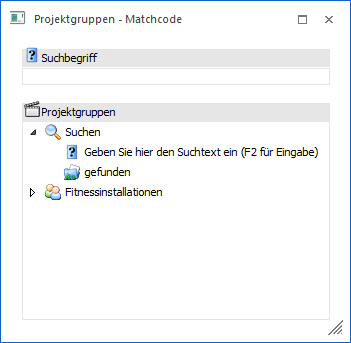
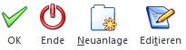

In diesem Fenster kann nach allen bereits angelegten Projektgruppen gesucht werden, es besteht aber auch die Möglichkeit, neue Projektgruppen anzulegen.

Wenn das Fenster geöffnet wird, dann werden im ersten Schritt alle Hauptebenen angezeigt und der Fokus liegt im Feld "Suchbegriff". Hier kann nun der Suchbegriff eingegeben werden, es besteht aber auch die Möglichkeit, sich durch die einzelnen Ebenen zu klicken, um den gewünschten Eintrag zu finden.
Wenn ein Suchbegriff eingegeben und bestätigt wird, dann werden alle gefundenen Einträge im Baum unter "Suchen - gefunden" angezeigt, wobei hier keine Hierarchie angezeigt wird (d.h. es werden alle gefunden Einträge in einer Ebene dargestellt). Zusätzlich dazu steht aber trotzdem noch die gesamte Gruppenstruktur zur individuellen Suche zur Verfügung.
Der gewünschte Eintrag wird durch einen Doppelklick in das Datenfeld übernommen.
Buttons

Ø Ok
Durch Drücken des Buttons "Ok" bzw. der Taste F5 wird die Suche anhand des Suchbegriffes ausgelöst.
Ø Ende
Durch Anwahl des Buttons "Ende" bzw. der Taste ESC wird das Fenster geschlossen.
Ø Neuanlage
Wenn der Button "Neuanlage" angeklickt wird, dann wird der Projektgruppen-Stamm geöffnet, wo neue Projektgruppen angelegt werden können.
Ø Editieren
Durch Anwahl des Buttons "Editieren" wird die aktive Projektgruppe im Projektgruppen-Stamm geöffnet und kann dort verändert werden. Ist keine Gruppe markiert, hat der Button auch keine Funktion.